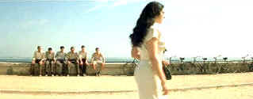

| Malèna/A-,B+ |
| Miramax/2000/92/ANA 2.35 |
Malena, a lovely sentimental soufflé from Italy’s reigning king of
cinema filtered through the warm glow of memory, Giuseppe Tornatore. Set in seaside Sicily during
the war, the atmosphere is flawless. Malena, played by beautiful Monica Belluci, saunters through
the dusty streets of the town like a Queen treating her subjects to a fleeting glace. Tornatore
lets him camera glide over the nooks and crannies of the local architecture and lust after the
graceful beauty of Malena. It’s all through the eyes of a young boy growing to be a young man.
 |
| The boys study Malena's posterior.
©Miramax |
The
warm memories of childhood are familiar territory for director Giuseppe Tornatore. Cinema Paradiso
was a beautifully evocative film of time and place and Malena repeats those same strengths. The
humor and style this time is more akin to mature Fellini. The memories are filtered through the
eyes of a child finding a path to manhood.
Malena is the story of a young boy growing up in Italy as he watches
his first love, a beautiful married women, walk the streets of the town and bend with the changing
climate. Young Renato is infatuated with Malena but he cannot confront his emotions with direct
contact. He hops on his bicycle to position himself ahead of Malena' every move. He writes
passionate letters to her but never sends them. It captures the place and time with great style..
The characters are often hilarious. There's the dentist who can't take his eyes off Malena. He like
to pull on more than her teeth and he can't contain his imagination. The bachelor lawyer with the harridan
mother covets Malena and his good defense of her weakens her defensive resolve. The local
fascist leaders are obnoxiously self-important and darn right mean. Every character revolves around
the swinging hips and proud stride of Malena.
The actors are very good, the direction sure-handed and
quick paced even in the lazy sunshine of Sicily. Monica Belluci is sparkling as the much maligned Malena. She carries herself
regally through the dusty Sicilian streets. Giuseppe Sulfaro is a gifted actor. His longing looks
carry much of the action.
Ennio Morricone's score moves with the same grace as cinematographer Lajos
Koltai's camera. The music and camera embellishment the sentimental style of director Tornatore,
punctuating and highlighting his life observations.
It’s a very good transfer. Sharp throughout, nice delicate color shadings and
excellent black levels. You can feel the Sicilian seaside heat rise up from the baked earth. Good
range of skin tones. Dolby Digital 5:1 encoding is clean, delivering the lyrical score floating
over the image. Yellow English subtitles adequately translate the dialogue.
|
|
|
|
 
ISF Monitor Calibrations in the
Tristate New York area. Lots of hardware info and frequent hardware peaks from video expert Kevin
Miller. They may be judgmental, but that's the point, isn't it. Lots of DVD reviews plus news and
more.

DiscReviews.com
is a new DVD review site
with a slick interface.

Nearly 40 key software and
hardware companies representing leading consumer electronics giants, major movie studios home video
and music video units have joined forces to establish the DVD Video Group.
 Kinoeye Archive Kinoeye Archive
This is a resource of all content-rich
materials on the web relating to Central and East European cinema. The ultimate aim of the Kinoeye
Archive is to provide a near-as-damn-it definitive index of intelligent and thoughtful
English-language analysis of Central and Eastern European cinema on the web.

Images is a non-commercial Web site created for everyone who enjoys movies and popular culture.
Images is published quarterly; however, new reviews will appear each week, so check back often.

Selections from the Feature Archive include articles on
Akira Kurosawa, Blonde Bimbos,
Frank
Darabont, Steven Culp,
John
Herzfeld or Vietnam: The
Hollywood Pariah, and many more....
The Bitch Brigade

A line-up of lean-lipped
actresses who marched through Hollywood in a high heeled goose step armed with razor sharp
dialogue. Click on the image to read all about them.
|